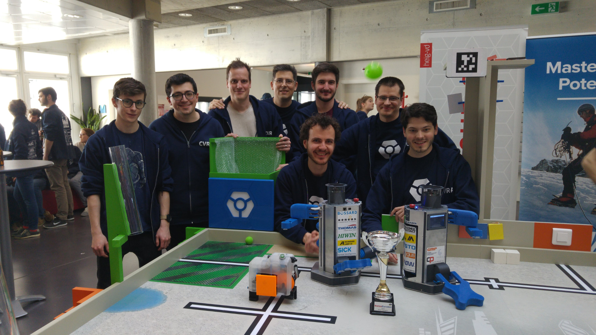
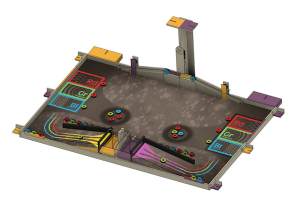

We started the season by participating the Belgian Eurobot competition. Then, we played the Swiss national contest and won second place (see picture). That qualified us for the world cup in France, where we reached the quarter finals. Finally, we won third place in the friendly Ile-de-France cup.
You can read more about our twin robots Order & Chaos in the 2018 page.

This year's goal is to make robots collect and discover atoms. Your mission, should you accept it, will consist of:
More details about the new contest in the rules.